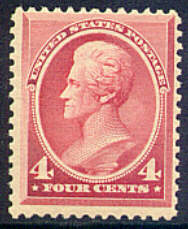
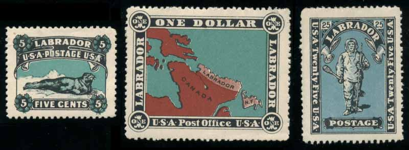
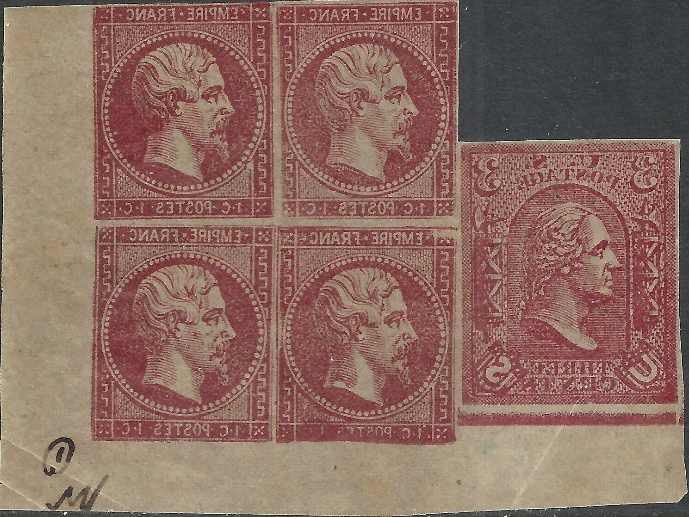

Return To Catalogue - 1847-1868 issues - 1869-1890 issues- 1890 and 1894 Presidents, small sizes - 1893 Columbus issue - 1902-1920; Presidents, small sizes - Commemorative issues, 1898-1920 - Confederate states - Confed. Bogus Locals - Confed. locals Athens - Greenville - Confed. locals Greenwood - Marion - Confed. locals Memphis - Nashville - Confed. locals New Orleans - Victoria and miscellaneous - Official - Due, Parcel stamps, Telegraph etc. - Newspaper stamps - Fiscal stamps, part 1 - Fiscal stamps, part 2 - Fiscal stamps, part 3 - Fancy cancels - Official seals - Postal Stationery
Local issues:
Locals, carriers,
postmasters and bogus issues; overview -
Locals unidentified stamps -Blood's local issues - Boyd's local issues - Hussey's local issues - Wells Fargo & Co - Semi-official local stamps and carriers -
Semi-official stamps for Baltimore - Semi-official stamps for Charleston - Semi-official stamps for New York - Postmaster issues part 1 - Postmaster issues part 2 - Postmaster issues part 3
Note: on my website many of the
pictures can not be seen! They are of course present in the cd's;
contact me if you want to purchase the catalogue.

Labrador:
5 c black and blue (seal), 25 c black and blue (man) and 1$ black, blue and red (map):

I have no idea by whom or why these stamps were made.

Block of four 1 c red forgeries, printed in reverse, together
with a forgery of the United States.
Here the same essay, but printed correctly.
{kind=link}
{kind=link}
{kind=link}
{kind=link}
{kind=link}